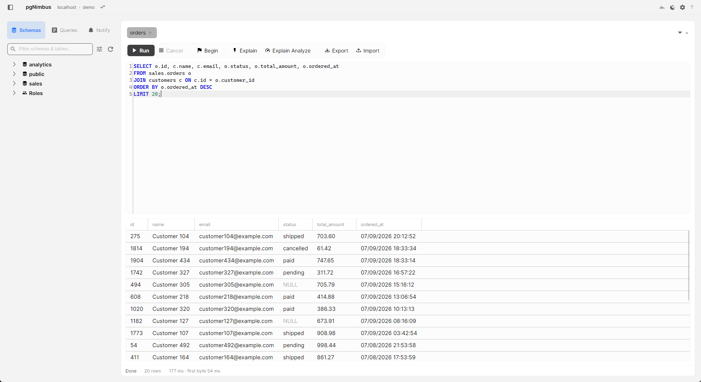
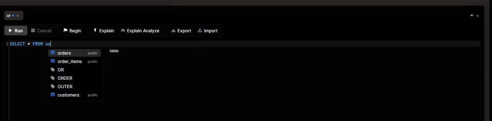
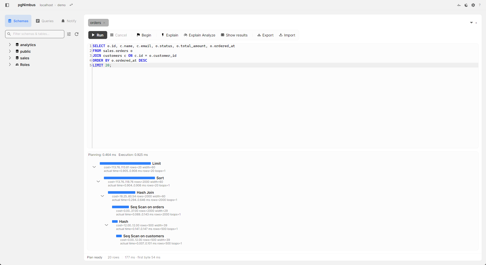
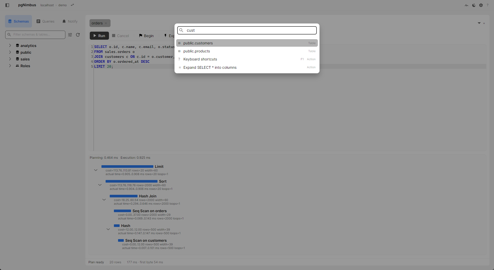
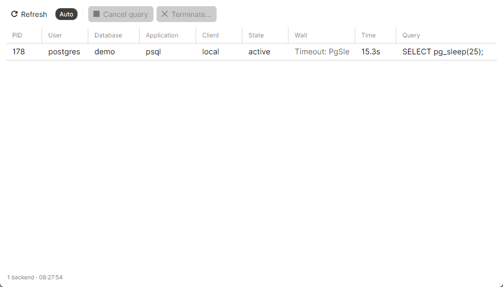
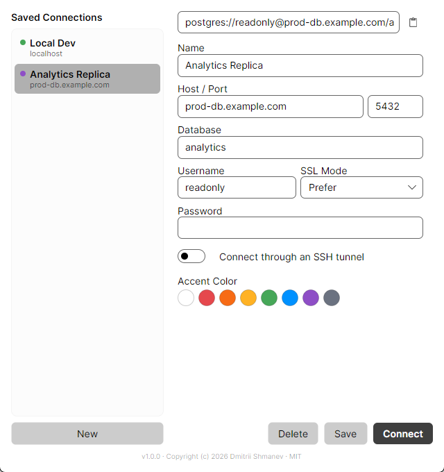

HeidiSQL's speed with TablePlus's polish — PostgreSQL-first, from the ground up. Native AOT startup in the ~100 ms range, streaming results, zero telemetry. Built with .NET 10 + Avalonia. MIT licensed.
or winget install --id 9N6SZT42XJ24 --source msstore

The gap in the Postgres client market: truly fast + open source + modern UI. pgAdmin and DBeaver are heavy; TablePlus is closed and paid; HeidiSQL is dated and MySQL-first.
A NativeAOT binary that's on screen in the ~100 ms range — not an Electron shell. Startup, memory, and query-engine numbers are measured on every release.
Deep pg_catalog introspection, graphical EXPLAIN, FK-aware JOIN completion, LISTEN/NOTIFY, server activity — never the lowest-common-denominator dialect.
A Ctrl+K command palette that fuzzy-jumps to any table, query, or action; run, cancel, and navigate without touching the mouse. F1 shows every binding.
Zero telemetry — no analytics, no crash reporting, no update pings. Passwords live in the OS credential store. MIT-licensed, so you can verify it, not trust it.
Cold start to first frame, completion that predicts the next move, and the tools around the query.

JOIN ranks related tables, ON completes the whole condition


pg_stat_activity — cancel or terminate a runaway backend in one click
A minimalist shell over a serious engine — secondary actions live in the palette, not on a toolbar.
text/jsonb value, JSON pretty-printed.COPY; copy results as CSV, JSON, Markdown, or INSERTs.Every tagged release runs the benchmark suite: startup to first frame, memory at first frame, connect and round-trip latency, time to first row batch, and full-stream throughput of a 100,000-row query.
Windows is the primary target; a macOS build ships as a very early beta.
The Microsoft Store build is signed by the Store — no SmartScreen warnings, automatic updates.
Microsoft Storewinget install --id 9N6SZT42XJ24 --source msstore
Prefer a plain installer? Grab the per-user MSI from Releases (unsigned — SmartScreen will warn once).
Apple Silicon .dmg from GitHub Releases. Unsigned for now, so Gatekeeper needs one command:
xattr -cr /Applications/pgNimbus.app
Full macOS support (signing, notarization) is planned. Details in the README.